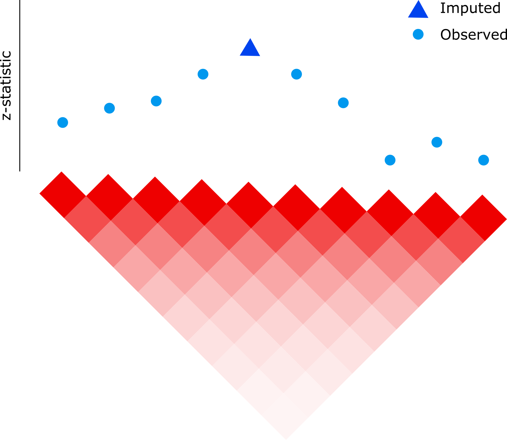

Impute z-statistics for missing variants using observed z-statistics and LD matrix

Genome-wide association studies (GWAS) performs tests of association across millions of genetic variants. The imputez package provides a series of statistical methods to impute the z-statistic for missing genetic variants by using LD information from a reference panel. The package achieves high accuracy by regularizing the LD matrix and uses a probabilistic whitening transformation with implicit covariance to scale to high-dimensional datasets. While standard analysis is \mathcal{O}(p^3) in the number of features, p, the package implements an algorithm that is the minimum of \mathcal{O}(n p^2) and \mathcal{O}(n^2 p). For large number of features, this is can be a dramatic speedup.
Methods
-
imputezDecorr(): scalable imputation using probabilistic whitening transformation with implicit covariance as implemented in the decorrelate package. -
imputez(): standard method for comparison that is cubic time in p
Installation
devtools::install_github("GabrielHoffman/imputez")